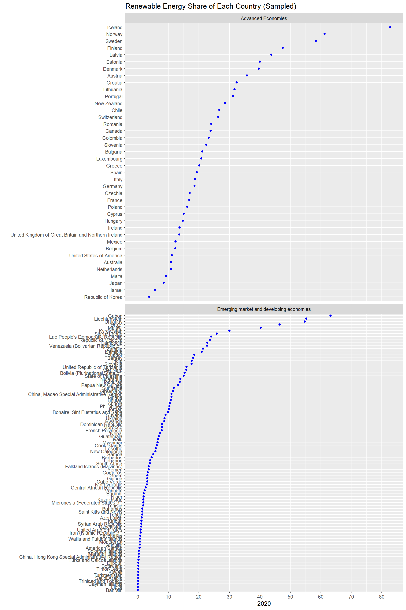
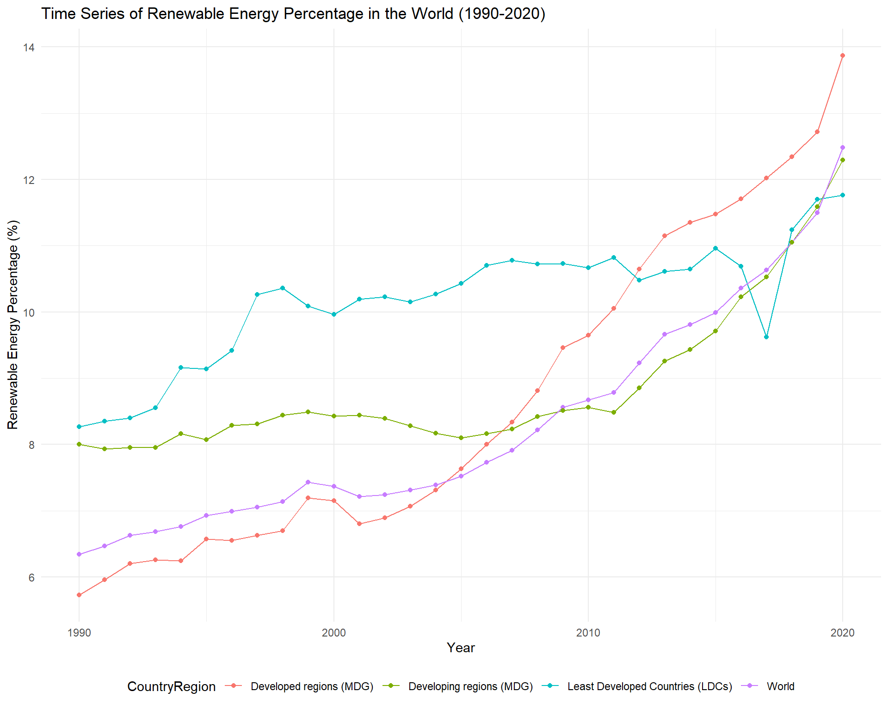
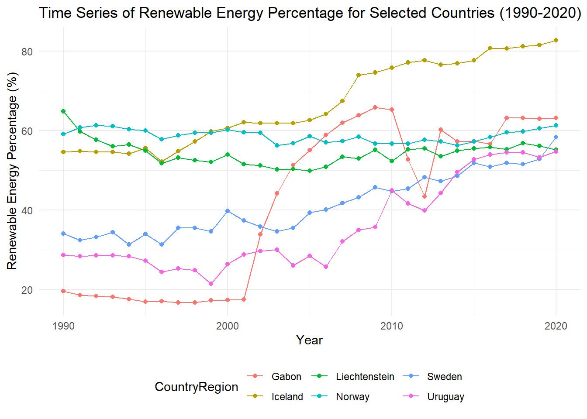
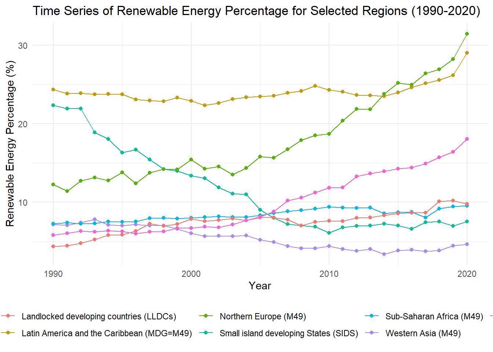
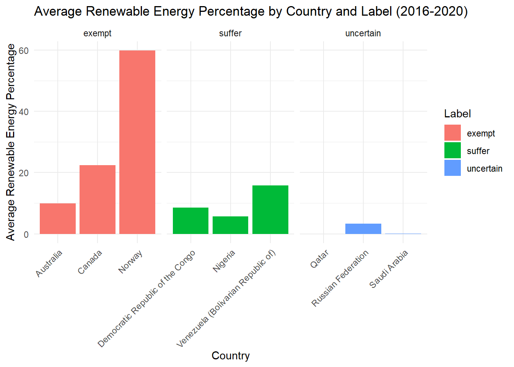
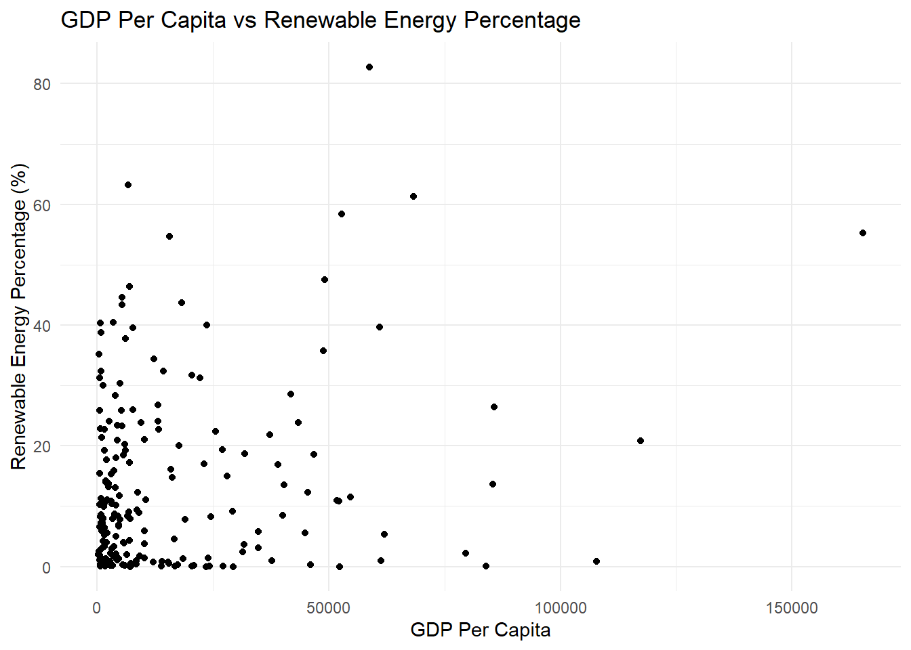
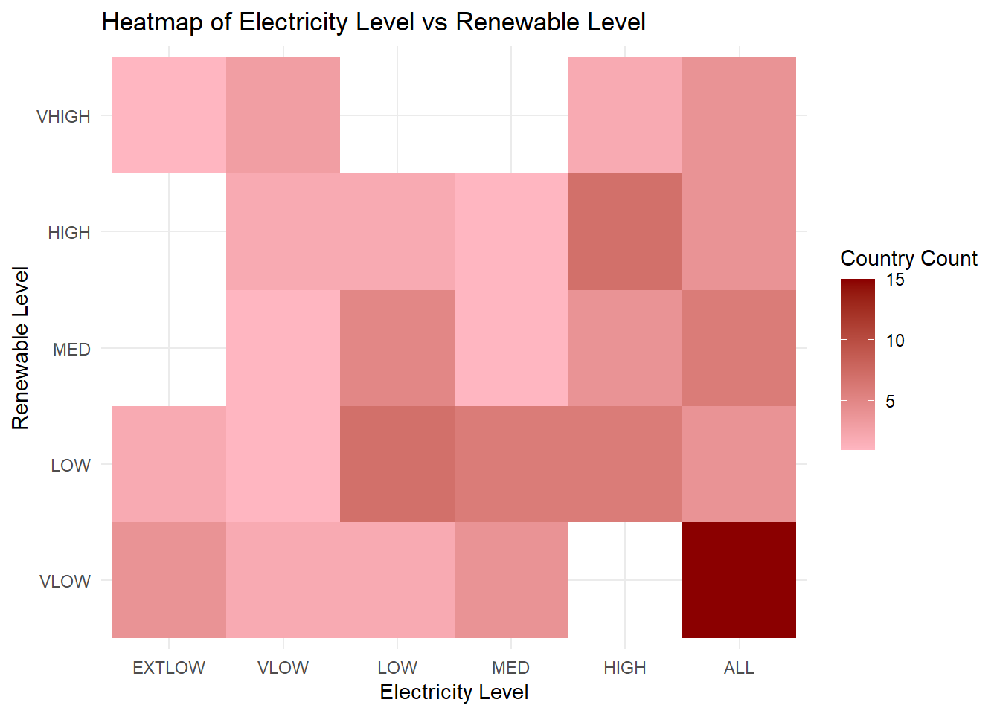
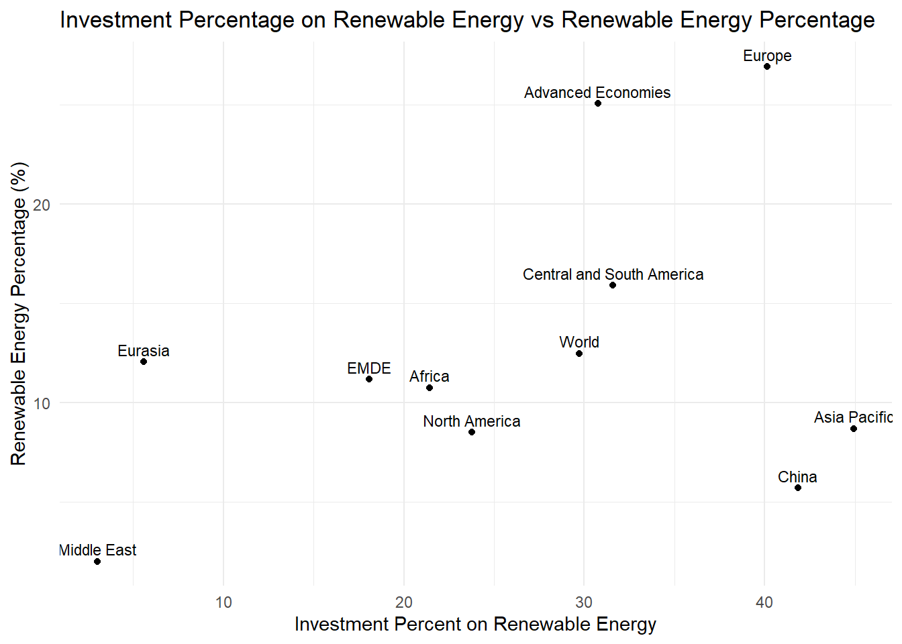
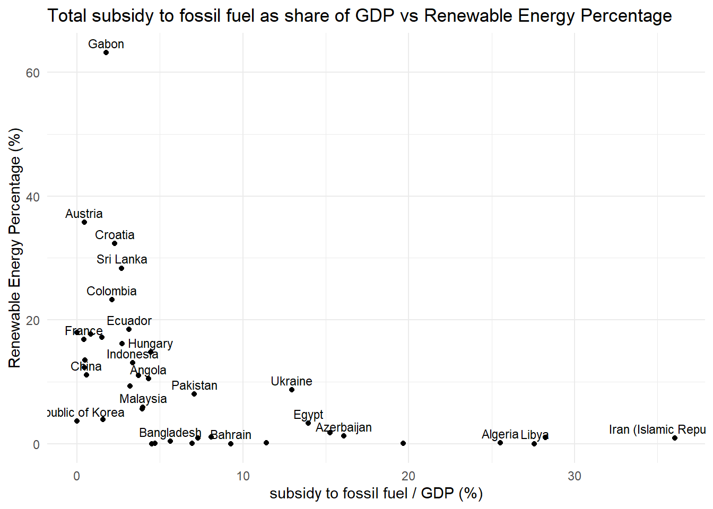

electricity =read_excel('data/data_process/electricity_data.xlsx')gdp_pc =read_excel('data/data_process/gdp_data.xlsx')investment_pct =read_excel('data/data_process/invest_percent_data.xlsx')renewable_pct =read_excel('data/data_process/renewable_percent_data.xlsx')subsidy_pct =read_excel('data/data_process/subsidy_data.xlsx')renewable_pct = renewable_pct %>%drop_na("2020") # drop nan according to missing value analysisnames(renewable_pct)[1] <-"CountryRegion"
3.1 Preprocess
3.1.1 Investment
Code
# decimal * 100 to be percent so it is consistent with dependent variableinvestment_pct$Renewable_Invest_Percent = investment_pct$Renewable_Invest_Percent *100
3.1.2 Subsidy
Code
# decimal * 100 to be percent so it is consistent with dependent variablesubsidy_pct$'Total subsidy as share of GDP (%)'= subsidy_pct$'Total subsidy as share of GDP (%)'*100# Fit country name of subsidy_pct to be consistent with name of renewable_pctsubsidy_pct <- subsidy_pct %>%mutate(`Country`=case_when(`Country`=="United Kingdom"~"United Kingdom of Great Britain and Northern Ireland",`Country`=="Iran"~"Iran (Islamic Republic of)",`Country`=="Korea"~"Republic of Korea",TRUE~`Country` ))
3.1.3 gdp_pc
Code
# Fit country name of gdp_pct to be consistent with name of renewable_pctgdp_pc <- gdp_pc %>%mutate(`Country Name`=case_when(`Country Name`=="Bahamas, The"~"Bahamas",`Country Name`=="Bolivia"~"Bolivia (Plurinational State of)",`Country Name`=="Cote d'Ivoire"~"Côte d'Ivoire",`Country Name`=="Congo, Dem. Rep."~"Democratic Republic of the Congo",`Country Name`=="Congo, Rep."~"Congo",`Country Name`=="Curacao"~"Curaçao",`Country Name`=="Egypt, Arab Rep."~"Egypt",`Country Name`=="Micronesia, Fed. Sts."~"Micronesia (Federated States of)",`Country Name`=="United Kingdom"~"United Kingdom of Great Britain and Northern Ireland",`Country Name`=="Gambia, The"~"Gambia",`Country Name`=="Hong Kong SAR, China"~"China, Hong Kong Special Administrative Region",`Country Name`=="Iran, Islamic Rep."~"Iran (Islamic Republic of)",`Country Name`=="Kyrgyz Republic"~"Kyrgyzstan",`Country Name`=="St. Kitts and Nevis"~"Saint Kitts and Nevis",`Country Name`=="Korea, Rep."~"Republic of Korea",`Country Name`=="Lao PDR"~"Lao People's Democratic Republic",`Country Name`=="St. Lucia"~"Saint Lucia",TRUE~`Country Name` ))
3.1.4 electricity
Code
# Fit country name of electricity to be consistent with name of renewable_pctelectricity <- electricity %>%mutate(`Region`=case_when(`Region`=="Bolivia"~"Bolivia (Plurinational State of)",`Region`=="Hong Kong SAR, China"~"China, Hong Kong Special Administrative Region",`Region`=="Iran"~"Iran (Islamic Republic of)",`Region`=="Korea, Rep."~"Republic of Korea",`Region`=="Laos"~"Lao People's Democratic Republic",TRUE~`Region` ))
3.2 Part 1: Is there any disparity in the share of modern renewables in total final energy consumption in the world?
advanced_economies <-c("Australia", "Austria", "Belgium", "Canada", "Chile", "Colombia", "Czechia", "Denmark", "Estonia", "Finland", "France", "Germany", "Greece", "Hungary", "Iceland", "Ireland", "Israel", "Italy", "Japan", "Republic of Korea", "Latvia", "Lithuania", "Luxembourg", "Mexico", "Netherlands", "New Zealand", "Norway", "Poland", "Portugal", "Slovak Republic", "Slovenia", "Spain", "Sweden", "Switzerland", "Turkey", "United Kingdom of Great Britain and Northern Ireland", "United States of America", "Bulgaria", "Croatia", "Cyprus", "Malta", "Romania")renewable_country$EconomyLabel <-ifelse(renewable_country$CountryRegion %in% advanced_economies, "Advanced Economies", "Emerging market and developing economies")
3.2.1 Cleveland Plot: situation in each country in 2020
we begin by creating a visual representation to show the proportion of renewable energy used in each country compared to their total energy consumption. This helps us understand how different countries are adopting renewable energy sources.
To categorize countries, we adopt the classification method used by the International Energy Agency. We define ‘Advanced economies’ as countries in the OECD (Organisation for Economic Co-operation and Development) group, which includes nations collaborating on economic policies to enhance their collective prosperity. This group also comprises Bulgaria, Croatia, Cyprus, Malta, and Romania. All other nations are grouped as ‘Emerging Market and Developing Economies.’ A country’s membership in the OECD is determined based on several criteria, including its level of economic development, adherence to democratic values, and its commitment to the objectives of the OECD. This makes the OECD a significant and influential group, and it is a persuasive way to divide the countries.
Code
advanced_countries <-filter(renewable_country, EconomyLabel =="Advanced Economies")emerging_countries <-filter(renewable_country, EconomyLabel =="Emerging market and developing economies")# Randomly sample half of the emerging countriesset.seed(123) # Setting a seed for reproducibilitysample_size <-ceiling(nrow(emerging_countries) /2) # Half of the emerging countriesemerging_sampled <-sample_n(emerging_countries, sample_size)# Combine the advanced countries with the sampled emerging countriescombined_sampled <-rbind(advanced_countries, emerging_sampled)# Now create your plotggplot(combined_sampled, aes(x =`2020`, y =fct_reorder(CountryRegion, `2020`))) +geom_point(color ='blue') +facet_wrap(~EconomyLabel, ncol =1, scales ="free_y") +ggtitle("Renewable Energy Share of Each Country (Sampled)") +scale_x_continuous(breaks =seq(0, 90, by =10)) +ylab("")

Since there is much more Emerging market and developing economies, we chose to randomly subset half of them and include in the Cleveland plot. The plot shows that advanced economies typically use a larger portion of renewable energy compared to other countries. Notably, Iceland and several countries in Northern Europe are leading in the use of renewable energy. However, what is surprising is that many countries in the third world also has high share of renewable energy, including Gabon, Uruguay, Brazil, and Malawi, exceed most advanced economies. Meanwhile, it’s important to note that in many of these countries, the use of renewable energy is still very minimal, close to 0%. This highlights the uneven adoption of renewable energy across different regions.
3.2.2 What is the progress of developed, developing, underdeveloped countries in developing renewable energy over the part 30 Years?
Code
# Filter for specified categoriesselected_categories <-filter(renewable_pct, CountryRegion %in%c("World", "Least Developed Countries (LDCs)", "Developing regions (MDG)", "Developed regions (MDG)"))# Reshape data to long formatselected_categories_long <-pivot_longer(selected_categories, cols =all_of(paste0(1990:2020)), names_to ="Year", values_to ="Percentage")# Convert both Year and Percentage to numericselected_categories_long$Year <-as.numeric(selected_categories_long$Year)selected_categories_long$Percentage <-as.numeric(selected_categories_long$Percentage)# Sort data by Yearselected_categories_long <- selected_categories_long %>%arrange(Year)# Create the multivariate time series plotggplot(selected_categories_long, aes(x = Year, y = Percentage, color = CountryRegion)) +geom_line() +# Line to connect pointsgeom_point() +# Points for each data entryggtitle("Time Series of Renewable Energy Percentage in the World (1990-2020)") +xlab("Year") +ylab("Renewable Energy Percentage (%)") +theme_minimal() +theme(legend.position ="bottom") # Adjust legend position as needed

It’s quite remarkable to look back at the 1990s and 2000s and see that the countries leading the adoption of renewable energy were primarily the Least Developed Countries, followed by Developing regions, and then Developed regions. This trend has subtle change around 2012. After years of rapidly increasing their use of renewable energy, developed countries overtook the Least Developed Countries in this area. By 2020, this pattern had completely reversed. Developed regions were now at the forefront of adopting renewable energy, but the difference is not significant yet.
3.2.3 What about countries with share >50%? When do they start to adopt renewable energy and have significant increase?
Code
# Filter for specified countriesselected_countries <-filter(renewable_pct, CountryRegion %in%c("Iceland", "Norway", "Sweden", "Gabon", "Liechtenstein", "Uruguay"))# Reshape data to long formatselected_countries_long <-pivot_longer(selected_countries, cols =all_of(paste0(1990:2020)), names_to ="Year", values_to ="Percentage")# Convert both Year and Percentage to numericselected_countries_long$Year <-as.numeric(selected_countries_long$Year)selected_countries_long$Percentage <-as.numeric(selected_countries_long$Percentage)# Sort data by Yearselected_countries_long <- selected_countries_long %>%arrange(Year)# Create the multivariate time series plotggplot(selected_countries_long, aes(x = Year, y = Percentage, color = CountryRegion)) +geom_line() +# Line to connect pointsgeom_point() +# Points for each data entryggtitle("Time Series of Renewable Energy Percentage for Selected Countries (1990-2020)") +xlab("Year") +ylab("Renewable Energy Percentage (%)") +theme_minimal() +theme(legend.position ="bottom") # Adjust legend position as needed

Our time series plot provides a fascinating insight into renewable energy trends over the past three decades. It highlights that three developed countries, Liechtenstein, Norway, and Iceland, have consistently maintained more than 50% of their energy consumption from renewable sources since 1990. This demonstrates a long-standing commitment to renewable energy in these nations. Additionally, the data shows an impressive rise in renewable energy use in two developing countries, Gabon and Uruguay, starting from 2001 and 2006 respectively. This indicates a growing shift towards renewable energy sources in these regions as well.
3.2.4 plot with some representitive regions in the world
From Cleveland Plot, countries in Northern Europe generally have high levels of renewable energy consumption, while many countries in Western Asia typically have lower levels. The disparity yields the question whether there is geographical influence on development of renewable energy. To investigate this further, we selected a few representative areas, ensuring that the countries within these regions have similar levels of economic development.
Code
# Filter for specified regionsselected_regions <-filter(renewable_pct, CountryRegion %in%c("Western Asia (M49)", "Sub-Saharan Africa (M49)", "Northern Europe (M49)", "Western Europe (M49)", "Landlocked developing countries (LLDCs)", "Small island developing States (SIDS)", "Latin America and the Caribbean (MDG=M49)"))# Reshape data to long formatselected_regions_long <-pivot_longer(selected_regions, cols =all_of(paste0(1990:2020)), names_to ="Year", values_to ="Percentage")# Convert both Year and Percentage to numericselected_regions_long$Year <-as.numeric(selected_regions_long$Year)selected_regions_long$Percentage <-as.numeric(selected_regions_long$Percentage)# Sort data by Yearselected_regions_long <- selected_regions_long %>%arrange(Year)# Create the multivariate time series plotggplot(selected_regions_long, aes(x = Year, y = Percentage, color = CountryRegion)) +geom_line() +# Line to connect pointsgeom_point() +# Points for each data entryggtitle("Time Series of Renewable Energy Percentage for Selected Regions (1990-2020)") +xlab("Year") +ylab("Renewable Energy Percentage (%)") +theme_minimal() +theme(legend.position ="bottom") # Adjust legend position as needed

The Time Series plot seems to fit the findings in the Cleveland plot. For instance, regions like Latin America and the Caribbean consistently demonstrate high renewable energy usage. In contrast, regions such as Western Asia and landlocked developing countries tend to have lower levels of renewable energy adoption. These findings spark curiosity and encourage further exploration into how different parts of the world vary in terms of renewable energy adoption. We will provide a more detailed breakdown of renewable energy trends by geolocation using interactive plots.
3.2.5 From the Point of Renewable Energy Adoption: Is Natural Resource Curse True?
In our study, we explore the concept of the ‘Natural Resource Curse,’ a situation where countries with abundant natural resources often experience economic challenges like overexploitation of resources, lack of industrial diversification, and sometimes corruption and conflict over resources.
To examine if this hypothesis is evident in our data, we selected nine resource-rich countries and compared their average share of renewable energy usage from 2016 to 2020. These countries are categorized into three groups based on their economic and resource management status. The first group, which is commonly associated with the Natural Resource Curse, includes Venezuela, Nigeria, and the Democratic Republic of the Congo. The second group, where the impact of natural resource dependence is debatable, consists of Saudi Arabia, Qatar, and Russia. The third group, known for their robust economies and effective resource management, comprises Norway, Canada, and Australia.
Our analysis is based on assumption that if the country has a low share of renewable energy, it means a heavy reliance on natural resources. This could potentially lead to economic vulnerabilities, such as fluctuating prices and a decrease in export demand.
Code
# Reshape the data to long formatresource_long_data <-pivot_longer(renewable_pct, cols =`2016`:`2020`, names_to ="Year", values_to ="Percentage")# Convert Year to numeric and ensure Percentage is numericresource_long_data$Year <-as.numeric(resource_long_data$Year)resource_long_data$Percentage <-as.numeric(resource_long_data$Percentage)# List of countriescountries <-c("Venezuela (Bolivarian Republic of)", "Nigeria", "Democratic Republic of the Congo", "Saudi Arabia", "Qatar", "Russian Federation", "Norway", "Canada", "Australia")# Filter for specified countries and yearsfiltered_data <- resource_long_data %>%filter(CountryRegion %in% countries, Year %in%2016:2020)# Calculate the average of 2016-2020 for each countryresource_average_data <- filtered_data %>%group_by(CountryRegion) %>%summarize(AveragePercentage =mean(Percentage, na.rm =TRUE)) # na.rm = TRUE to ignore NA values# Define labelsresource_average_data$Label <-ifelse(resource_average_data$CountryRegion %in%c("Venezuela (Bolivarian Republic of)", "Nigeria", "Democratic Republic of the Congo"),"suffer",ifelse(resource_average_data$CountryRegion %in%c("Saudi Arabia", "Qatar", "Russian Federation"),"uncertain","exempt"))
Code
ggplot(resource_average_data, aes(x = CountryRegion, y = AveragePercentage, fill = Label)) +geom_bar(stat ="identity", position =position_dodge()) +facet_wrap(~ Label, scales ="free_x") +ggtitle("Average Renewable Energy Percentage by Country and Label (2016-2020)") +xlab("Country") +ylab("Average Renewable Energy Percentage") +theme_minimal() +theme(axis.text.x =element_text(angle =45, hjust =1))

The graph in our study confirms our hypothesis: Australia, Canada, and Norway, despite being rich in natural resources, show a high adoption of renewable energy. This indicates a successful balance between resource wealth and sustainable energy practices. Following these are countries that appear to suffer from the Natural Resource Curse. Notably, Qatar and Saudi Arabia, despite their wealth, have made almost no progress in developing renewable energy. This observation suggests that policymakers in these countries may need to reconsider their approach towards sustainable development.
3.3 Part 2: What Can Influence Share of Renewable Energy Consumption?
ggplot(merged_gdp_renewable, aes(x = gdp_percapita, y =`renewable_pct(%)`)) +geom_point() +# Add pointsggtitle("GDP Per Capita vs Renewable Energy Percentage") +xlab("GDP Per Capita") +ylab("Renewable Energy Percentage (%)") +theme_minimal() # Optional: a minimal theme for a cleaner look

Commonly, when considering the development of renewable energy, one might first think of a country’s economic strength. It is often assumed that countries with robust economies would naturally lead in renewable energy development. However, our scatter plot analysis cannot prove it. There is no significant positive correlation between a country’s economic development and its progress in renewable energy. This finding suggests that the advancement of renewable energy is not necessarily dependent on a country’s economic status. We need to find other key determinants.
3.3.2 Factor 2: Access to Electricity
Access to energy is a multifaceted concept, encompassing technical availability, adequacy, reliability, convenience, safety, and affordability. Central to this is access to electricity, which is crucial for any nation’s development. Anyone may ask, if a country do not have access to electricity, how can it start develop renewable energy?
Code
merged_electricity_renewable <-left_join(renewable_country, electricity, by =c("CountryRegion"="Region"))cleaned_merged_electricity_renewable <-na.omit(merged_electricity_renewable)
Code
# Step 1: Convert ">99%" to 1cleaned_merged_electricity_renewable <- cleaned_merged_electricity_renewable %>%mutate(`2022`=ifelse(`2022`==">99%", 1, `2022`))# Step 2: Ensure the '2022' column is numericcleaned_merged_electricity_renewable$`2022`<-as.numeric(cleaned_merged_electricity_renewable$`2022`)# Step 3: Categorize the '2022' columncleaned_merged_electricity_renewable_category <- cleaned_merged_electricity_renewable %>%mutate(electricity_level =case_when(`2022`>=0.99~"ALL",`2022`<0.2~"EXTLOW",`2022`>=0.2&`2022`<0.4~"VLOW",`2022`>=0.4&`2022`<0.6~"LOW",`2022`>=0.6&`2022`<0.8~"MED",`2022`>=0.8&`2022`<0.99~"HIGH",TRUE~"Uncategorized" ),renewable_level =case_when(`2020`>=30~"VHIGH",`2020`>=16&`2020`<30~"HIGH",`2020`>=8&`2020`<16~"MED",`2020`>=2&`2020`<8~"LOW",`2020`<2~"VLOW",TRUE~"Uncategorized" ) )
Code
cleaned_merged_electricity_renewable_category$electricity_level <-factor( cleaned_merged_electricity_renewable_category$electricity_level,levels =c("EXTLOW", "VLOW", "LOW", "MED", "HIGH", "ALL"))cleaned_merged_electricity_renewable_category$renewable_level <-factor( cleaned_merged_electricity_renewable_category$renewable_level,levels =c("VLOW", "LOW", "MED", "HIGH", "VHIGH"))# Summarizing the dataheatmap_data <- cleaned_merged_electricity_renewable_category %>%group_by(electricity_level, renewable_level) %>%summarise(Count =n(), .groups ='drop')# Creating the heatmap with ordered categoriesggplot(heatmap_data, aes(x = electricity_level, y = renewable_level, fill = Count)) +geom_tile() +scale_fill_gradient(low ="lightpink", high ="darkred") +labs(title ="Heatmap of Electricity Level vs Renewable Level",x ="Electricity Level",y ="Renewable Level",fill ="Country Count") +theme_minimal()

Since the included countries in Electricity dataset has many country with electricity access ‘>99%’, we decided to code the electricity to 6 levels. Similarly, we classified the share of renewable energy into five different levels. Then, we count how many countries fall within the levels.
Our heatmap analysis yielded another unexpected insight: countries with nearly universal access to electricity is most likely to have a very low level of renewable energy share. There is no clear pattern linking electricity access and renewable energy adoption. Since our dataset primarily includes countries from the developing world, this suggests that while some of these nations may have addressed basic infrastructure issues, they have not necessarily made significant strides in developing renewable energy. This finding is crucial as it highlights that solving infrastructure problems does not automatically lead to renewable energy development.
3.3.3 Factor 3: Investment to Renewable Energy
Next, we plan to assess the impact of government policy on renewable energy development by analyzing the percentage of investment in renewable energy out of the total energy investments.
# Calculate average for EconomyLabelavg_economy <- cleaned_merged_gdp_renewable %>%group_by(EconomyLabel) %>%summarize(AverageRenewablePct =mean(`renewable_pct(%)`, na.rm =TRUE)) %>%mutate(Label = EconomyLabel) %>%select(Label, AverageRenewablePct)# Calculate average for Region_Labelavg_region <- cleaned_merged_gdp_renewable %>%group_by(Region_Label) %>%summarize(AverageRenewablePct =mean(`renewable_pct(%)`, na.rm =TRUE)) %>%mutate(Label = Region_Label) %>%select(Label, AverageRenewablePct)# Combine the two dataframescombined_avg <-bind_rows(avg_economy, avg_region)
Code
# manually add World entrycombined_avg <-rbind(combined_avg, data.frame(Label ="World", AverageRenewablePct =12.48))# Rename 'Emerging market and developing economies' to 'EMDE' for mergecombined_avg <- combined_avg %>%mutate(Label =ifelse(Label =="Emerging market and developing economies", "EMDE", Label))
Code
# First, join combined_avg with investment_pctmerged_investment_renewable <-left_join(combined_avg, investment_pct, by =c("Label"="Region"))# merged_investment_renewable <- merged_investment_renewable %>%# rename(Renewable_Invest_Percent = `Investment_Pct`)
Code
ggplot(merged_investment_renewable, aes(x = Renewable_Invest_Percent, y =`AverageRenewablePct`)) +geom_point() +# Add pointsggtitle("Investment Percentage on Renewable Energy vs Renewable Energy Percentage") +xlab("Investment Percent on Renewable Energy") +ylab("Renewable Energy Percentage (%)") +geom_text(aes(label = Label), vjust =-0.5, hjust =0.5, check_overlap =TRUE, size =3, nudge_x =0.01, nudge_y =0.01) +theme_minimal()

Our findings are constrained by data availability, as we only have information on renewable energy investments for 11 regions. Despite this limitation, the data from these regions indicate a positive relationship between investment in renewable energy and its share in the energy mix. This suggests that investments in renewable energy are effectively translating into real-world increases in renewable energy usage.
3.3.4 Factor 4: Subsidy to Fossil Fuel
The final factor we consider is the subsidy provided to fossil fuels. Typically, countries focused on developing renewable energy offer incentives to related industries and impose restrictions on traditional fossil fuels. Consequently, countries with higher subsidies for fossil fuels might experience stagnant progress in renewable energy development.
Code
merged_subsidy_renewable <-left_join(renewable_country, subsidy_pct, by =c("CountryRegion"="Country"))cleaned_merged_subsidy_renewable <-na.omit(merged_subsidy_renewable)
Code
ggplot(cleaned_merged_subsidy_renewable, aes(x =`Total subsidy as share of GDP (%)`, y =`2020`)) +geom_point() +# Add pointsggtitle("Total subsidy to fossil fuel as share of GDP vs Renewable Energy Percentage") +xlab("subsidy to fossil fuel / GDP (%)") +ylab("Renewable Energy Percentage (%)") +geom_text(aes(label = CountryRegion), vjust =-0.5, hjust =0.5, check_overlap =TRUE, size =3, nudge_x =0.01, nudge_y =0.01) +theme_minimal()

We visualize the impact of subsidies by dividing them by the GDP. The plot clearly shows that countries with a higher proportion of GDP allocated to fossil fuel subsidies tend to have a lower percentage of renewable energy. This indicates that policy plays a significant role in the development of renewable energy.